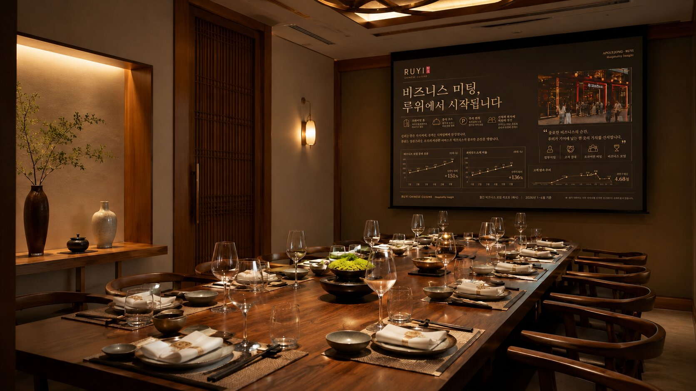
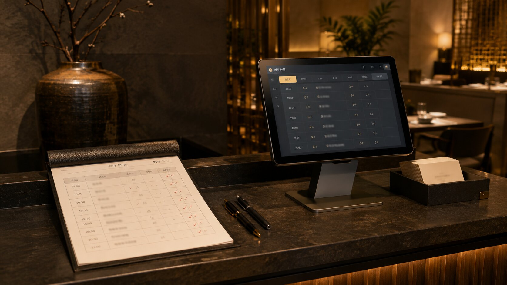
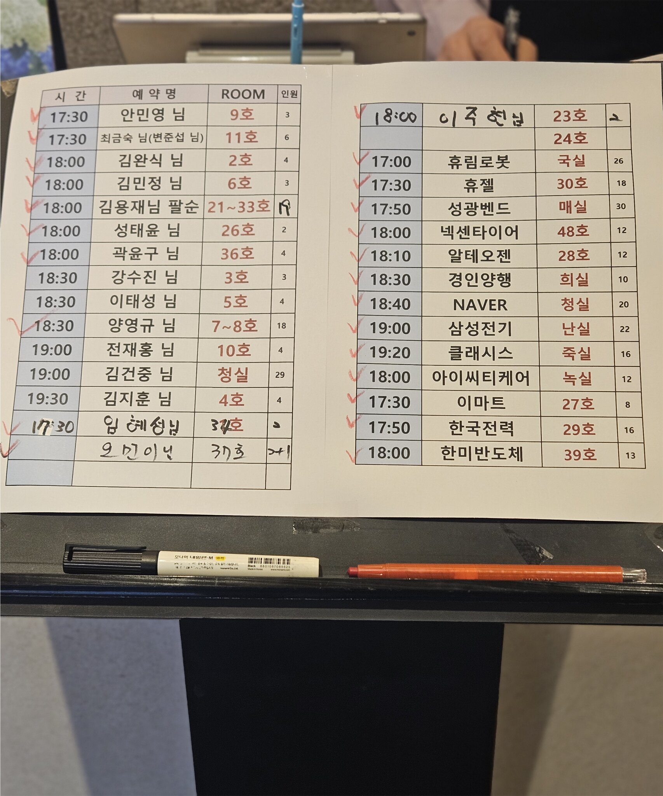

새 장비를 들이는 일이 아닙니다. 고객이 매장 안에서 느낀 안심이 리뷰, 재방문, 소개로 돌아오게 만드는 정리입니다.



기존의 예약 체크 방식은 현장에는 익숙하지만, 고객에게 보이는 운영 신호는 더 정돈될 수 있습니다. 예약보드는 종이를 없애는 일이 아니라, "내 자리가 정확히 준비되고 있다"는 안심을 보여주는 장치입니다.
지금 예약지에는 가족모임과 대기업 단체 접대가 함께 들어옵니다 — 두 흐름을 화면에서 한눈에 구분하는 것이 예약보드의 핵심입니다.


현재 방식 · 블러 참고 이미지
각 요소는 하나의 역할만 맡습니다. 권유가 아니라 안내, 장식이 아니라 안심의 근거입니다.
빨간 펜 도착 체크의 직관 그대로, 한 번의 터치로. 가족모임·비즈니스를 색으로 구분합니다.
나눠주는 홍보물이 아니라, 고객이 스스로 가져가는 한 장. 다음 중요한 자리의 연결점입니다.
음향 없이, 천천히, 광고 문구 없이 — 공간의 격만 보여주는 화면입니다.
영문 메뉴와 QR로, 계산 후 한 장이 재예약과 리뷰로 이어집니다.
그릴링 서비스와 계절 코스를 한 줄로. 묻지 않아도 알게 되는 안내입니다.
한 번에 바꾸지 않습니다. 매주 한 단계씩 운영에 녹아듭니다. 설치는 영업시간 외 진행합니다.
동선 확인, 스크린·모니터 위치 결정, 구매 발주.
제작물 디자인 확정, 예약보드 색상 체계 설계.
프로젝터·모니터 설치, 슬라이드·예약보드 시범 운영.
구간별 멘트 적용, 자리카드 비치, QR 연결 확인.
제작물과 온라인 화면이 함께 쓰는 사진입니다. 한 번의 촬영으로 카드·프로젝터·플레이스를 모두 채울 수 있습니다.
| 카테고리 | 필요한 컷 | 쓰이는 곳 |
|---|---|---|
| 룸 | 인원별 룸(4·6·10인+), 문 닫힌 컷, 세팅 컷 | 자리카드·룸 안내·온라인 |
| 그릴링 | 손+숯불+갈비 클로즈업 1컷 | 프로젝터·플레이스 대표 |
| 코스 한상 | 전체 코스 1컷 + 시그니처 1컷 | 홈페이지·캐치테이블 |
| 주차·발렛 | 입구 동선, 발렛 인계 장면 | 외국인 카드·플레이스 |
| 목적별 세팅 | 상견례 / 비즈니스 세팅 각 1컷 | 룸 안내·프로젝터 |
| 외국인 안내 | 영문 메뉴 컷, 인사 장면 1컷 | 외국인 카드·구글 |
| 카운터 | 자리카드 메인 비주얼용 룸 1컷 | 자리카드 전면 |